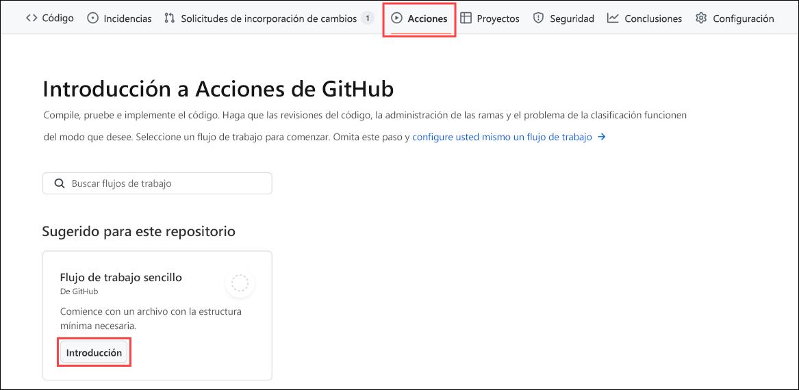

3 Automatización del flujo de trabajo con GitHub Actions
3.1 Introducción
GitHub Actions optimiza el tiempo de entrega del código desde la idea hasta la implementación en una plataforma impulsada por la comunidad.
Supongamos que administramos un equipo que está desarrollando un sitio web para mejorar la experiencia de los clientes al contactar con el servicio de soporte técnico. El equipo directivo da mucha importancia a este proyecto: quiere un sitio de alta calidad y lo quiere publicar pronto. Debemos asegurarnos de que el equipo produce código que se pueda probar, compilar e implementar rápidamente con cada nueva característica implantada. Además, el departamento de TI quiere automatizar la creación y el desmontaje de la infraestructura del proyecto. Decidimos usar la integración continua (CI) y la entrega continua (CD) para automatizar todas las tareas de compilación, prueba e implementación. También adoptaremos la infraestructura como código (IaC) para automatizar las tareas de TI.
Para lograr estos objetivos, tenemos varias herramientas a nuestra disposición. Sin embargo, como ya usamos GitHub para el repositorio de código, decidimos analizar GitHub Actions para ver si nos proporciona la automatización que necesitamos.
En este módulo, veremos los flujos de trabajo y GitHub Actions. Más tarde, usaremos los conocimientos que adquiramos aquí para implementar la integración y la entrega continuas, y la infraestructura como código.
Objetivos de aprendizaje
Objetivos de este módulo:
- Aprender qué es GitHub Actions, los tipos de acciones disponibles y dónde encontrarlas.
- Identificar los componentes necesarios en un archivo de flujo de trabajo de GitHub Actions.
- Planear la automatización del ciclo de vida de desarrollo de software con flujos de trabajo de GitHub Actions.
- Crear una acción de contenedor y ejecutarla en un flujo de trabajo desencadenado por un evento de envío de cambios en un repositorio de GitHub.
Prerrequisitos
- Una cuenta de GitHub.
- Capacidad de editar archivos en GitHub y navegar por ellos.
- Para obtener más información sobre GitHub, ver Introducción a GitHub.
3.2 ¿De qué forma las Acciones de GitHub automatizan las tareas de desarrollo?
Aquí presentamos las acciones y los flujos de trabajo de GitHub. Aprenderemos los tipos de acciones que podemos usar y dónde encontrarlas. También veremos ejemplos de estos tipos de acciones y cómo encajan en un flujo de trabajo.
Reducción del tiempo que transcurre entre la idea y la implementación gracias a GitHub
GitHub está diseñado para ayudar a los equipos de desarrolladores y a los ingenieros de DevOps a crear e implementar aplicaciones rápidamente. Hay muchas características en GitHub que permiten estas eficiencias, pero generalmente se dividen en una de estas dos categorías:
- Comunicación: pensemos en todas las formas en que GitHub facilita a un equipo de desarrolladores la comunicación sobre el proyecto de desarrollo de software: revisiones de código en solicitudes de incorporación de cambios, incidencias de GitHub, paneles de proyectos, wikis, notificaciones, etc.
- Automatización: Acciones de GitHub nos permite automatizar los flujos de trabajo en cada paso del proceso de desarrollo de software, desde la integración hasta la entrega y la implementación. Incluso nos permite automatizar la adición de etiquetas a las solicitudes de incorporación de cambios y la comprobación de incidencias y solicitudes de incorporación de cambios obsoletas.
Al combinarse, estas características han permitido a miles de equipos de desarrollo reducir de manera eficaz la cantidad de tiempo que transcurre desde su idea inicial hasta la implementación.
Uso de la automatización de flujo de trabajo para reducir el tiempo de desarrollo
En este módulo, nos centramos en la automatización. Dediquemos un momento a comprender cómo los equipos pueden utilizar la automatización para reducir el tiempo que se tarda en completar un flujo de trabajo típico de desarrollo e implementación.
Pensemos en todas las tareas que deben tener lugar después de escribir el código, pero antes de que podamos usarlo de forma confiable para su finalidad prevista. En función de los objetivos de la organización, es probable que tengamos que realizar una o varias de las tareas siguientes:
- Asegurarnos de que el código pasa todas las pruebas unitarias.
- Realizar controles de calidad y cumplimiento del código para garantizar que el código fuente cumpla con los estándares de la organización.
- Comprobar el código y sus dependencias para detectar problemas de seguridad conocidos.
- Compilar el código integrando el nuevo código fuente, posiblemente de varios colaboradores.
- Asegurarnos de que el software pasa las pruebas de integración.
- Especificar la versión de la nueva compilación.
- Entregar los nuevos archivos binarios a la ubicación adecuada del sistema de archivos.
- Implementar los nuevos archivos binarios en uno o varios servidores.
- Determinar si alguna de estas tareas no se cumple y notificar el problema a la persona o equipo adecuado para su resolución.
El reto es realizar estas tareas de manera confiable, sistemática y sostenible. Este proceso es un trabajo ideal para la automatización del flujo de trabajo. Si ya confiamos en GitHub, es probable que queramos configurar la automatización del flujo de trabajo mediante Acciones de GitHub.
¿Qué son las Acciones de GitHub (GitHub Actions)?
Las Acciones de GitHub son scripts empaquetados para automatizar tareas en un flujo de trabajo de desarrollo de software en GitHub. Podemos configurar Acciones de GitHub para desencadenar flujos de trabajo complejos que se adapten a las necesidades de nuestra organización. El desencadenante puede producirse cada vez que los desarrolladores suben código fuente nuevo a una rama específica, a intervalos programados o manualmente. El resultado es un flujo de trabajo automatizado confiable y sostenible, que supone una disminución significativa del tiempo de desarrollo.
¿Dónde se pueden encontrar las Acciones de GitHub?
Las Acciones de GitHub son scripts escritos en formato YAML. Cada repositorio tiene una pestaña Acciones que nos proporciona una manera rápida y sencilla de empezar a configurar nuestro primer script. Si vemos un flujo de trabajo que creemos que podría ser un buen punto de partida, solo tenemos que seleccionar el botón Configurar para agregar el script y comenzar a editar el archivo YAML de origen.
